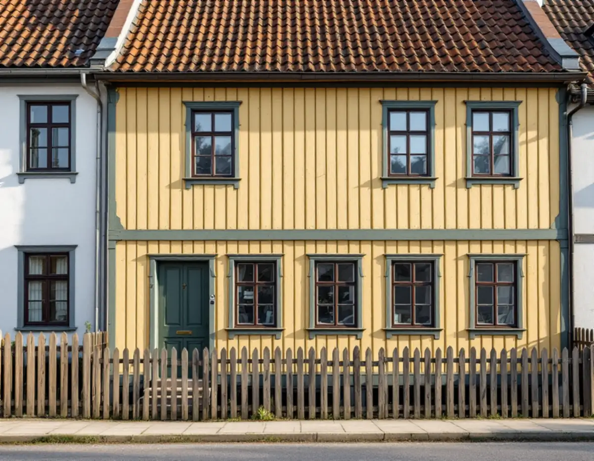
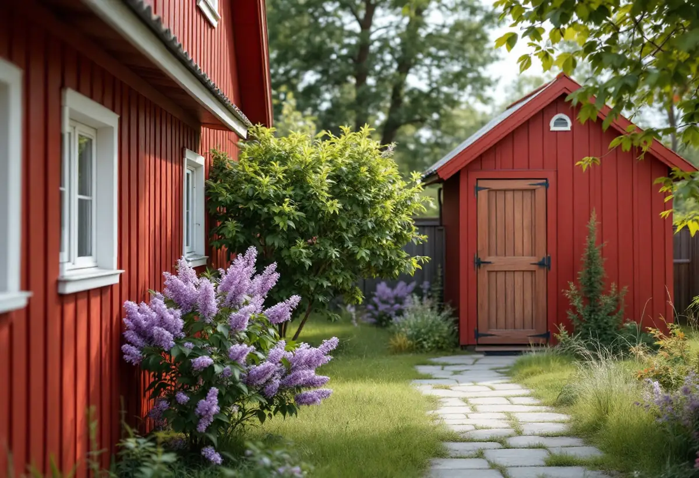
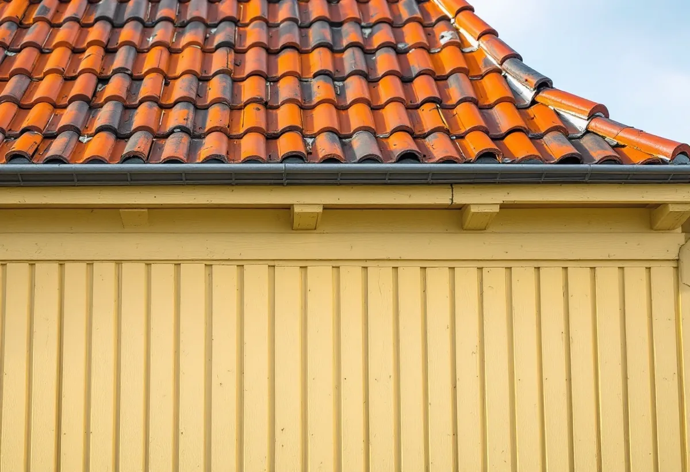

Platsbesök
Vi går runt huset och skiljer på gatufasad, gårdsfasad och uthus.

I Sigtunas gamla stadskärna har många hus två sidor som målades på olika sätt: en finare fasad mot gatan och en enklare mot gården.
Beskriv jobbet kort.
Något blev fel. Kontrollera uppgifterna eller ring 08 12 410 276.
Vi tittar på jobbet på plats innan du får offert.
Du ser vad som ingår och vad det kostar.
Vi drar av ROT direkt och sköter ansökan.
Geal Entreprenad AB, Bromma. Org.nr 559303-7566.

Geal Entreprenad AB målar om fasader, gavlar och uthus i Sigtuna och utgår från vad som redan sitter på varje vägg innan färgtyp och kulör bestäms.
Bevarande- och förnyelseplanen för Sigtuna stad beskriver hur stadens fasader har färgsatts, och den gör en tydlig skillnad mellan husets sidor. Den fina oljemålade panelen var som regel förbehållen gatufasaden och de gavlar som syntes. Många gårdsfasader förblev, liksom uthusen, rödfärgade långt in i sen tid. Planens färgundersökning handlar därför främst om fasaden mot gatan, och de hus som fortfarande är rödfärgade har inte undersökts, eftersom de inte har haft någon oljefärg att ta prov på.
Ett och samma hus kan alltså bära två färgtyper som sköts olika. Enligt Riksantikvarieämbetets handbok om byggnadsmåleri ska linoljefärg strykas tunt, hellre i flera tunna lager än i få tjocka, medan röd slamfärg är matt, vattenspädbar och släpper igenom fukt. Slamfärgen fäster bra på ohyvlat virke men sämre på hyvlat. Vid platsbesöket går vi därför runt hela huset och bedömer gatusidan, gårdssidan och uthusen var för sig.

Enligt planen hängde förekomsten av oljemålad panel och en del av skillnaderna i kulörval ihop med byggnadens status, som ägare, storlek, användning och läge. Det fanns till exempel en skillnad mellan norra och södra sidan av Stora gatans centrala del. De enklare husen söder om gatan och på Malmen tog över de finare husens färgsättning först efter 10–20 år. Undersökningens indelning i skeden tycks dessutom följa den naturliga ommålningscykeln på ungefär 20 år.
Under 1880- och 1890-talen var det lika vanligt att fasad och knutar hade samma färg som att knutarna avvek, och fönstren var ofta mörkbruna oavsett fasadfärg. Länsstyrelsernas blad om målning utomhus på trä ger en äldre bakgrund: inklädda knutar och lister målades grå med oljefärg för att likna sandsten, och panelklädda fasader oljemålades för att likna sten eller puts. Vilken lösning som hör till just ditt hus visar de gamla färglagren, och därför skrapar vi fram dem innan vi föreslår något.
Vi går runt huset och skiljer på gatufasad, gårdsfasad och uthus.
Små ytor skrapas fram för att se färgtyp och äldre kulörer.
Varje sida och färgtyp står för sig, så att du ser vad som ingår.
Oljefärgen tvättas och skrapas, rödfärgen borstas fri från lös färg.
Linoljefärg i tunna lager och slamfärg i en strykning vid ommålning.
Vi går igenom resultatet och skriver ner vilka kulörer som har använts.
Hur lång tid en fasadmålning i Sigtuna tar styrs av fasadens storlek och höjd, av hur mycket gammal färg som måste skrapas bort och av vädret. Strykningarna går fort; det är torktiden efter tvätten och mellan lagren som tar tid, och den bestäms av temperatur och luftfuktighet.
Arbetet görs under årets varma del, och vi planerar med marginal för regn. Tidplanen står i kostnadsförslaget.
Skatteverket räknar målning av fasader i ett småhus som rotarbete, liksom att montera och montera ner byggnadsställningen. Komplementhus som förråd och andra mindre byggnader kan höra till småhuset, men målning av staket och murar ger inget avdrag.
Avdraget är 30 procent av arbetskostnaden, högst 50 000 kr per person och år och högst 75 000 kr tillsammans med rutavdrag. Färg, material och resor ger inget avdrag. Geal drar avdraget direkt på fakturan. Du ska äga huset medan arbetet utförs.
Hur många sidor och byggnader som ska målas, om gatufasad och gårdssida har olika färgtyp, hur många knutar, foder och listverk som får egen kulör och hur mycket panel som behöver lagas väger tyngst. Efter ett gratis platsbesök får du ett skriftligt kostnadsförslag.
Vi publicerar inga prislistor för fasadmålning – förarbetet kan skilja mycket mellan två lika stora hus. Arbete, material och ställning står som egna poster i kostnadsförslaget. Hur arbetet går till från tvätt till sista strykning, och vad som ingår, beskriver vi på sidan om fasadmålning i Stockholm.
Måla om träfasad eller puts – med ställning.
Fasadmålning i Stockholm →Takbyte, takbesiktning och plåtarbeten.
Takläggare i Sigtuna →Sigtuna stad, Märsta och Arlanda.
Takrenovering i Sigtuna →Potten, Arlanda och gårdshusen.
Attefallshus i Sigtuna →Anmälan, fläkt och dusch i stället för badkar.
Badrumsrenovering i Sigtuna →Nytt hus, gästhus och större tomt.
Byggföretag i Sigtuna →Puts i stadskärnan, panel i dalgången.
Fasadrenovering i Sigtuna →Arlanda, ljudisolering och fönster i Sigtuna.
Fönsterbyte i Sigtuna →Bevarandeplanen, gammalt glas och fönsterkulörer.
Fönsterrenovering i Sigtuna →Golv på platta, fuktmätning och radon.
Golvläggare i Sigtuna →Plankgolv i äldre trähus.
Golvslipning i Sigtuna →Ventilation, avlopp och anmälan.
Köksrenovering i Sigtuna →Stadskärnan, Märsta och Rosersberg.
Målare i Sigtuna →Plåttak, rännor och beslag i Sigtuna.
Plåtslagare i Sigtuna →Staket, dörrar och gårdshus i stad och dalgång.
Snickare i Sigtuna →Lov, checklista och gårdarnas tegel.
Takbyte i Sigtuna →Ny tapet i äldre trähus.
Tapetsering i Sigtuna →Arlanda, uterum och handlingarna.
Tillbyggnad i Sigtuna →Ventilation, VA och kulturmiljö.
Totalrenovering i Sigtuna →Eller ring 08 12 410 276, mån–fre 08–17.
Beskriv jobbet kort.
Något blev fel. Kontrollera uppgifterna eller ring 08 12 410 276.